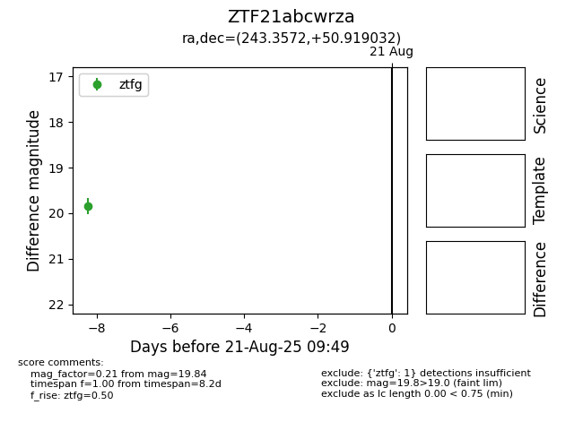

Target ZTF21abcwrza at 2025-08-21 09:49, see:
FINK: fink-portal.org/ZTF21abcwrza
Lasair: lasair-ztf.lsst.ac.uk/objects/ZTF21abcwrza
ALeRCE: alerce.online/object/ZTF21abcwrza
alt names
ZTF21abcwrza (ztf,alerce)
coordinates:
equatorial (ra, dec) = (243.3572,+50.91903)
galactic (l, b) = (79.1746,+45.30477)
photometry
last ztfg=19.84
1 ztfg detections
